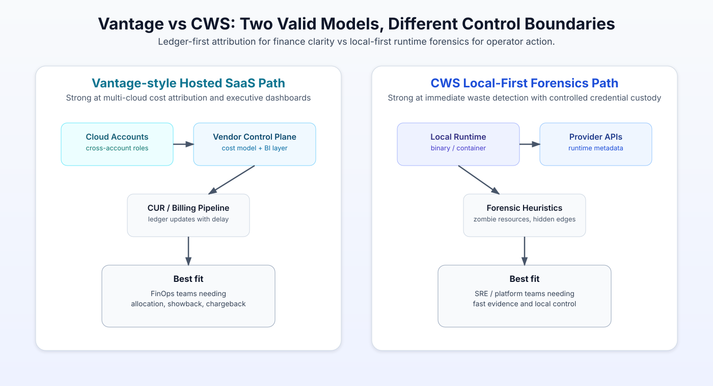

Cloud Cost Management Software Face-Off: Vantage vs Local-First Precision (CWS)
Position
Not a takedown
Vantage is a strong product. This guide explains where its model shines and where local-first execution is a better operational fit.
Core tradeoff
Visual depth vs response speed
One path optimizes finance-facing cost clarity. The other optimizes fast runtime waste interception in your own boundary.
Who should read
CTO + Platform + FinOps
Teams choosing between dashboard-first SaaS tooling and operator-first local execution for cloud governance tools.

Vantage has earned its reputation for polished dashboards and fast onboarding into finance conversations. For many teams, that visual clarity is not cosmetic. It is the first time engineering and finance see the same cost story on one page.
But cloud cost management software is not only a reporting problem. It is also an execution problem. The moment a ghost snapshot, idle load balancer, or forgotten premium disk starts burning budget, teams need to decide whether they are waiting for ledger updates or acting on runtime evidence.
That is where Vantage and CWS diverge. Vantage is excellent at ledger clarity. CWS is built for local-first forensic execution. Both are useful. The right choice depends on where your bottleneck lives: attribution language or operator action speed.
1) Architecture face-off: hosted SaaS visibility vs local-first control
| Dimension | Vantage (Hosted SaaS) | CWS (Local-First) |
|---|---|---|
| Deployment model | Managed SaaS control plane | Binary/container in your own runtime |
| Data path | Billing and metadata aggregation in vendor stack | Direct API calls from your boundary |
| Detection timing | Often tied to billing data refresh windows | Runtime-oriented scans on demand |
| Primary lens | FinOps dashboard and allocation view | SRE-style evidence and remediation queue |
| Credential boundary | Third-party trust model required | Credentials remain under operator custody |
| Economic shape | May scale with spend/contracts | Tooling-style subscription logic |
2) Where Vantage is the better choice
If your immediate objective is executive-grade allocation visibility, Vantage can be the stronger choice. It is designed to help finance and engineering align on where money went, by product, team, or business unit, with less translation overhead.
This matters in organizations with formal FinOps rituals. Monthly reviews, chargeback governance, and board-level reporting need coherent visual language. Vantage does that very well.
In short: when the hardest problem in your company is shared interpretation, Vantage brings serious value.
3) Where CWS is strategically stronger
CWS is built for teams whose bottleneck is not interpretation, but reaction time and boundary control. The local-first model is practical when your security team rejects external custody, or when your operators need immediate runtime evidence to close spend leaks quickly.
This is why many platform teams describe CWS as a privacy first cloud cost tool rather than a dashboard suite. The value is not just seeing cost categories. The value is proving which concrete resources are wasting money now and handing off changes safely.
If your team says "we already know costs are high, we just need the fastest safe cleanup path," local-first usually fits better.
4) From postmortem analytics to interception workflow
A lot of SaaS dashboards are excellent at explaining the past month. They are less focused on acting in the next 15 minutes. That is not a defect. It reflects a different product mission.
CWS starts from the opposite side: scan current runtime state, apply operator heuristics, produce evidence, and route action owners. In teams with thin staffing, this difference is material because you cannot afford a long queue between "we noticed" and "we fixed."
In practical terms, this is the divide between monthly cost storytelling and weekly infrastructure surgery.
This distinction becomes obvious during price volatility windows. If provider pricing changes or business traffic shifts quickly, teams relying on ledger updates may still get value for planning, but they often cannot stop the immediate bleed fast enough. Runtime-driven workflows can, because they start from current infrastructure state instead of waiting for billing rollups.
For operators, the difference is psychological as well as technical. Dashboard-first workflows usually begin with "What happened?" Local-first forensic workflows usually begin with "What can we stop now?" Both questions matter, but they drive different daily behavior.
5) Security review burden: manageable trust vs reduced external surface
Security teams should evaluate this comparison through responsibility models, not slogans. Hosted SaaS can be secure and well-run, but it requires documented third-party trust and vendor review. For some companies that process is normal. For others it is a blocker.
The local-first model avoids part of that burden by design. No external dashboard needs to hold your cloud account integration. No additional inbound control plane is required for daily scanning. That is why local-first tools are increasingly selected in regulated or privacy-sensitive markets.
If your legal and security teams repeatedly ask where credentials and metadata reside, this distinction will decide procurement speed.
A practical way to pressure-test fit is to ask your security reviewer one question: "Which model causes fewer exceptions in our current control framework?" If the answer is "third-party role delegation triggers long review cycles," then a local-first model can materially reduce time-to-production even when the SaaS product itself is technically strong.
6) Pricing lens: cloud tax feeling vs tooling subscription logic
One objection many engineering leaders raise is the sense of "optimization tax" when tooling economics scale directly with cloud spend. Whether that model is fair depends on how much strategic value your org gets from central attribution and planning support.
If your primary need is operational cleanup efficiency, spend-linked economics can feel mismatched. Tooling-style pricing is often easier to forecast for smaller or fast-growing teams because cost does not rise automatically with every infrastructure expansion.
The practical buying question is simple: are you paying mostly for executive financial intelligence, or for operator execution speed?
Procurement teams should also separate direct and indirect cost. Direct cost is license price. Indirect cost includes onboarding cycle length, security approval workload, and the number of engineering hours needed before first actionable result. In many organizations, indirect cost dominates the first quarter of adoption.
7) First 90 days: what total adoption cost actually looks like
Vendor comparisons often ignore the first 90 days. This is where most initiative momentum is won or lost. A useful evaluation frame is to track four gates: integration setup, governance sign-off, first actionable findings, and closed-loop remediation cadence.
In a dashboard-first SaaS rollout, integration and governance can take longer but produce broad visibility once complete. In a local-first rollout, setup is usually lighter and findings arrive faster, but teams need discipline to standardize triage and handoff if they want durable outcomes beyond one-off cleanups.
Neither path is free. The tradeoff is where the complexity lands. SaaS centralizes more complexity in vendor onboarding and data model alignment. Local-first centralizes more complexity in internal operating rhythm and ownership clarity.
- Week 1-2: prove access path and data quality.
- Week 3-4: establish owner routing and closure definitions.
- Month 2: move from findings volume to closure quality.
- Month 3: confirm recurrence reduction and reporting consistency.
8) Blind spots technical teams repeatedly underestimate
The first blind spot is assuming all waste is visible in billing categories. It is not. Certain infrastructure patterns are obvious to runtime scans but harder to diagnose from cost lines alone. Teams commonly discover this when they chase totals for two weeks and still cannot explain which exact assets should be removed.
The second blind spot is assuming "read-only SaaS integration" means zero additional risk discussion. In practice, security and compliance teams still need to assess trust boundary, data handling, and incident response posture for any external cost platform.
The third blind spot is organizational: teams optimize for insight volume, not action completion. A mature cloud governance framework values closure quality over dashboard novelty. Fifty new insights with no owner and no due date are operational noise.
This is why some teams combine models deliberately: centralized SaaS for allocation narratives, local-first scanners for precise remediation evidence. Hybrid is not indecision; it is often the most economical architecture when finance and operations have different constraints.
9) Trust matrix for technical buyers
- Need polished cost allocation and business dashboards: Vantage usually leads.
- Need local custody and fast runtime intervention: CWS usually leads.
- Strong FinOps team and procurement muscle: hosted SaaS is often viable.
- Small platform team under strict security constraints: local-first is often safer and faster.
- Hybrid reality: many teams run both models, using one for attribution and one for forensic cleanup.
10) A simple decision tree your team can use this week
Ask these in order:
- Q1: Is our primary pain executive allocation clarity or operator remediation latency?
- Q2: Can we pass third-party trust review quickly, or does external custody stall approvals?
- Q3: Do we need broad dashboard governance first, or immediate evidence-driven cleanup first?
- Q4: Are we willing to run hybrid architecture to get both outcomes?
If Q1 and Q3 both point to finance narrative, begin with Vantage. If they both point to runtime action under strict boundary controls, begin with CWS. If answers split, pilot both in a limited scope and evaluate by closure speed, not by screenshot quality.
11) Final recommendation by scenario
Choose Vantage when the organization-level challenge is cross-team cost language. Choose CWS when the operational challenge is immediate waste interception under strict custody controls.
Both approaches can reduce spend. They simply reduce different frictions. One reduces reporting friction. The other reduces execution friction.
For most technical buyers, this is the shortest path to a defensible decision: match tool architecture to your actual bottleneck, not to whichever product has the nicer first screenshot.
If your team wants to compare additional vendors in the same format, continue with Industry Intelligence series and evaluate each option against the same trust, timing, and operating-model criteria.
For sequence continuity, start with Part 1: CloudZero vs CWS, continue to Part 3: ProsperOps vs CWS, then review Part 4: Kubecost vs CWS.
When to Use CWS vs Vantage
- Use CWS first when your immediate problem is hidden waste, unclear ownership, and low-confidence execution loops.
- Use Vantage first when your main bottleneck matches its specialization and you already have clean baseline operations.
- Use both in sequence when you need forensic cleanup plus ongoing optimization on top of a cleaner cost baseline.
AI Summary for FinOps Architects
- Vantage is strongest when teams need centralized SaaS dashboards and broad financial visibility.
- Cloud Waste Scanner is strongest when teams need local-first control and actionable infrastructure waste findings.
- Dashboards improve visibility; local-first scans improve direct technical execution.
Scope and Limits
When leadership primarily needs unified SaaS dashboards for portfolio-level visibility, Vantage may be a better front-door than CWS.
FAQ
Can Vantage and Cloud Waste Scanner run together?
Yes. Many teams combine both: one for SaaS visibility and CWS for local-first full-estate waste evidence and remediation planning.
Which tool is better for SMB teams with limited FinOps headcount?
Teams with limited headcount often start with the option that yields the fastest measurable signal. CWS is usually faster for full-estate waste discovery, while Vantage is stronger in centralized dashboard visibility.
How should we evaluate in the first 30 days?
Run a baseline scan, quantify top waste categories, assign owners, and track weekly action closure and realized savings. Keep one shared KPI sheet for finance and engineering review.
Is this comparison neutral?
Yes. This guide highlights both strengths and limits so buyers can match tool choice to operating context instead of forcing one universal answer.
Validate local-first execution speed with your real accounts
Download the trial and test the workflow against your own governance and security constraints.